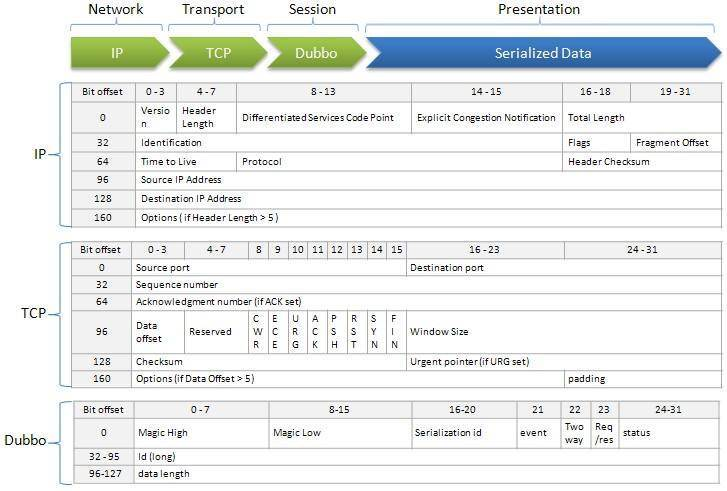
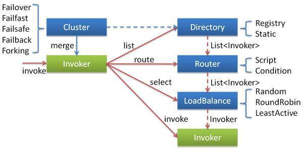
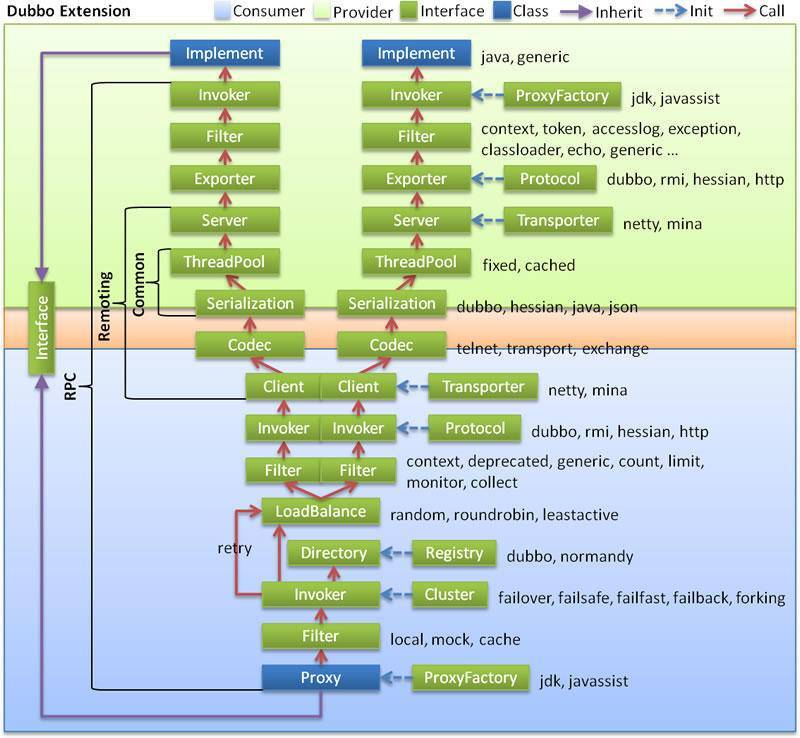

- 00 开篇词 微服务，从放弃到入门.md
- 01 到底什么是微服务？.md
- 02 从单体应用走向服务化.md
- 03 初探微服务架构.md
- 04 如何发布和引用服务？.md
- 05 如何注册和发现服务？.md
- 06 如何实现RPC远程服务调用？.md
- 07 如何监控微服务调用？.md
- 08 如何追踪微服务调用？.md
- 09 微服务治理的手段有哪些？.md
- 10 Dubbo框架里的微服务组件.md
- 11 服务发布和引用的实践.md
- 12 如何将注册中心落地？.md
- 13 开源服务注册中心如何选型？.md
- 14 开源RPC框架如何选型？.md
- 15 如何搭建一个可靠的监控系统？.md
- 16 如何搭建一套适合你的服务追踪系统？.md
- 17 如何识别服务节点是否存活？.md
- 18 如何使用负载均衡算法？.md
- 19 如何使用服务路由？.md
- 20 服务端出现故障时该如何应对？.md
- 21 服务调用失败时有哪些处理手段？.md
- 22 如何管理服务配置？.md
- 23 如何搭建微服务治理平台？.md
- 24 微服务架构该如何落地？.md
- 25 微服务为什么要容器化？.md
- 26 微服务容器化运维：镜像仓库和资源调度.md
- 27 微服务容器化运维：容器调度和服务编排.md
- 28 微服务容器化运维：微博容器运维平台DCP.md
- 29 微服务如何实现DevOps？.md
- 30 如何做好微服务容量规划？.md
- 31 微服务多机房部署实践.md
- 32 微服务混合云部署实践.md
- 33 下一代微服务架构Service Mesh.md
- 34 Istio：Service Mesh的代表产品.md
- 35 微博Service Mesh实践之路（上）.md
- 36 微博Service Mesh实践之路（下）.md
- 微博技术解密（上） 微博信息流是如何实现的？.md
- 微博技术解密（下）微博存储的那些事儿.md
- 结束语 微服务，从入门到精通.md
- 阿忠伯的特别放送 答疑解惑01.md
- 阿忠伯的特别放送 答疑解惑02.md
10 Dubbo框架里的微服务组件
经过前面几期的讲解，你应该已经对微服务的架构有了初步的了解。简单回顾一下，微服务的架构主要包括服务描述、服务发现、服务调用、服务监控、服务追踪以及服务治理这几个基本组件。
那么每个基本组件从架构和代码设计上该如何实现？组件之间又是如何串联来实现一个完整的微服务架构呢？今天我就以开源微服务框架Dubbo为例来给你具体讲解这些组件。
服务发布与引用
专栏前面我讲过服务发布与引用的三种常用方式：RESTful API、XML配置以及IDL文件，其中Dubbo框架主要是使用XML配置方式，接下来我通过具体实例，来给你讲讲Dubbo框架服务发布与引用是如何实现的。
首先来看服务发布的过程，下面这段代码是服务提供者的XML配置。
<?xml version="1.0" encoding="UTF-8"?>
<beans xmlns="http://www.springframework.org/schema/beans"
xmlns:xsi="http://www.w3.org/2001/XMLSchema-instance"
xmlns:dubbo="http://dubbo.apache.org/schema/dubbo"
xsi:schemaLocation="http://www.springframework.org/schema/beans http://www.springframework.org/schema/beans/spring-beans-4.3.xsd http://dubbo.apache.org/schema/dubbo http://dubbo.apache.org/schema/dubbo/dubbo.xsd">
<!-- 提供方应用信息，用于计算依赖关系 -->
<dubbo:application name="hello-world-app" />
<!-- 使用multicast广播注册中心暴露服务地址 -->
<dubbo:registry address="multicast://224.5.6.7:1234" />
<!-- 用dubbo协议在20880端口暴露服务 -->
<dubbo:protocol name="dubbo" port="20880" />
<!-- 声明需要暴露的服务接口 -->
<dubbo:service interface="com.alibaba.dubbo.demo.DemoService" ref="demoService" />
<!-- 和本地bean一样实现服务 -->
<bean id="demoService" class="com.alibaba.dubbo.demo.provider.DemoServiceImpl" />
</beans>
其中“dubbo:service”开头的配置项声明了服务提供者要发布的接口，“dubbo:protocol”开头的配置项声明了服务提供者要发布的接口的协议以及端口号。
Dubbo会把以上配置项解析成下面的URL格式：
dubbo://host-ip:20880/com.alibaba.dubbo.demo.DemoService
然后基于扩展点自适应机制，通过URL的“dubbo://”协议头识别，就会调用DubboProtocol的export()方法，打开服务端口20880，就可以把服务demoService暴露到20880端口了。
再来看下服务引用的过程，下面这段代码是服务消费者的XML配置。
<?xml version="1.0" encoding="UTF-8"?>
<beans xmlns="http://www.springframework.org/schema/beans"
xmlns:xsi="http://www.w3.org/2001/XMLSchema-instance"
xmlns:dubbo="http://dubbo.apache.org/schema/dubbo"
xsi:schemaLocation="http://www.springframework.org/schema/beans http://www.springframework.org/schema/beans/spring-beans-4.3.xsd http://dubbo.apache.org/schema/dubbo http://dubbo.apache.org/schema/dubbo/dubbo.xsd">
<!-- 消费方应用名，用于计算依赖关系，不是匹配条件，不要与提供方一样 -->
<dubbo:application name="consumer-of-helloworld-app" />
<!-- 使用multicast广播注册中心暴露发现服务地址 -->
<dubbo:registry address="multicast://224.5.6.7:1234" />
<!-- 生成远程服务代理，可以和本地bean一样使用demoService -->
<dubbo:reference id="demoService" interface="com.alibaba.dubbo.demo.DemoService" />
</beans>
其中“dubbo:reference”开头的配置项声明了服务消费者要引用的服务，Dubbo会把以上配置项解析成下面的URL格式：
dubbo://com.alibaba.dubbo.demo.DemoService
然后基于扩展点自适应机制，通过URL的“dubbo://”协议头识别，就会调用DubboProtocol的refer()方法，得到服务demoService引用，完成服务引用过程。
服务注册与发现
先来看下服务提供者注册服务的过程，继续以前面服务提供者的XML配置为例，其中“dubbo://registry”开头的配置项声明了注册中心的地址，Dubbo会把以上配置项解析成下面的URL格式：
registry://multicast://224.5.6.7:1234/com.alibaba.dubbo.registry.RegistryService?export=URL.encode("dubbo://host-ip:20880/com.alibaba.dubbo.demo.DemoService")
然后基于扩展点自适应机制，通过URL的“registry://”协议头识别，就会调用RegistryProtocol的export()方法，将export参数中的提供者URL，注册到注册中心。
再来看下服务消费者发现服务的过程，同样以前面服务消费者的XML配置为例，其中“dubbo://registry”开头的配置项声明了注册中心的地址，跟服务注册的原理类似，Dubbo也会把以上配置项解析成下面的URL格式：
registry://multicast://224.5.6.7:1234/com.alibaba.dubbo.registry.RegistryService?refer=URL.encode("consummer://host-ip/com.alibaba.dubbo.demo.DemoService")
然后基于扩展点自适应机制，通过URL的“registry://”协议头识别，就会调用RegistryProtocol的refer()方法，基于refer参数中的条件，查询服务demoService的地址。
服务调用
专栏前面我讲过在服务调用的过程中，通常把服务消费者叫作客户端，服务提供者叫作服务端，发起一次服务调用需要解决四个问题：
客户端和服务端如何建立网络连接？
服务端如何处理请求？
数据传输采用什么协议？
数据该如何序列化和反序列化？
其中前两个问题客户端和服务端如何建立连接和服务端如何处理请求是通信框架要解决的问题，Dubbo支持多种通信框架，比如Netty 4，需要在服务端和客户端的XML配置中添加下面的配置项。
服务端：
<dubbo:protocol server="netty4" />
客户端：
<dubbo:consumer client="netty4" />
这样基于扩展点自适应机制，客户端和服务端之间的调用会通过Netty 4框架来建立连接，并且服务端采用NIO方式来处理客户端的请求。
再来看下Dubbo的数据传输采用什么协议。Dubbo不仅支持私有的Dubbo协议，还支持其他协议比如Hessian、RMI、HTTP、Web Service、Thrift等。下面这张图描述了私有Dubbo协议的协议头约定。

- (图片来源：https://dubbo.incubator.apache.org/docs/zh-cn/dev/sources/images/dubbo_protocol_header.jpg ）至于数据序列化和反序列方面，Dubbo同样也支持多种序列化格式，比如Dubbo、Hession 2.0、JSON、Java、Kryo以及FST等，可以通过在XML配置中添加下面的配置项。
例如：
<dubbo:protocol name="dubbo" serialization="kryo"/>
服务监控
服务监控主要包括四个流程：数据采集、数据传输、数据处理和数据展示，其中服务框架的作用是进行埋点数据采集，然后上报给监控系统。
在Dubbo框架中，无论是服务提供者还是服务消费者，在执行服务调用的时候，都会经过Filter调用链拦截，来完成一些特定功能，比如监控数据埋点就是通过在Filter调用链上装备了MonitorFilter来实现的，详细的代码实现你可以参考这里。
服务治理
服务治理手段包括节点管理、负载均衡、服务路由、服务容错等，下面这张图给出了Dubbo框架服务治理的具体实现。

- （图片来源：http://dubbo.incubator.apache.org/docs/zh-cn/user/sources/images/cluster.jpg ）图中的Invoker是对服务提供者节点的抽象，Invoker封装了服务提供者的地址以及接口信息。
节点管理：Directory负责从注册中心获取服务节点列表，并封装成多个Invoker，可以把它看成“List
” ，它的值可能是动态变化的，比如注册中心推送变更时需要更新。 负载均衡：LoadBalance负责从多个Invoker中选出某一个用于发起调用，选择时可以采用多种负载均衡算法，比如Random、RoundRobin、LeastActive等。
服务路由：Router负责从多个Invoker中按路由规则选出子集，比如读写分离、机房隔离等。
服务容错：Cluster将Directory中的多个Invoker伪装成一个Invoker，对上层透明，伪装过程包含了容错逻辑，比如采用Failover策略的话，调用失败后，会选择另一个Invoker，重试请求。
一次服务调用的流程
上面我讲的是Dubbo下每个基本组件的实现方式，那么Dubbo框架下，一次服务调用的流程是什么样的呢？下面结合这张图，我来给你详细讲解一下。

- (图片来源：https://dubbo.incubator.apache.org/docs/zh-cn/dev/sources/images/dubbo-extension.jpg ）首先我来解释微服务架构中各个组件分别对应到上面这张图中是如何实现。
服务发布与引用：对应实现是图里的Proxy服务代理层，Proxy根据客户端和服务端的接口描述，生成接口对应的客户端和服务端的Stub，使得客户端调用服务端就像本地调用一样。
服务注册与发现：对应实现是图里的Registry注册中心层，Registry根据客户端和服务端的接口描述，解析成服务的URL格式，然后调用注册中心的API，完成服务的注册和发现。
服务调用：对应实现是Protocol远程调用层，Protocol把客户端的本地请求转换成RPC请求。然后通过Transporter层来实现通信，Codec层来实现协议封装，Serialization层来实现数据序列化和反序列化。
服务监控：对应实现层是Filter调用链层，通过在Filter调用链层中加入MonitorFilter，实现对每一次调用的拦截，在调用前后进行埋点数据采集，上传给监控系统。
服务治理：对应实现层是Cluster层，负责服务节点管理、负载均衡、服务路由以及服务容错。
再来看下微服务架构各个组件是如何串联起来组成一个完整的微服务框架的，以Dubbo框架下一次服务调用的过程为例，先来看下客户端发起调用的过程。
首先根据接口定义，通过Proxy层封装好的透明化接口代理，发起调用。
然后在通过Registry层封装好的服务发现功能，获取所有可用的服务提供者节点列表。
再根据Cluster层的负载均衡算法从可用的服务节点列表中选取一个节点发起服务调用，如果调用失败，根据Cluster层提供的服务容错手段进行处理。
同时通过Filter层拦截调用，实现客户端的监控统计。
最后在Protocol层，封装成Dubbo RPC请求，发给服务端节点。
这样的话，客户端的请求就从一个本地调用转化成一个远程RPC调用，经过服务调用框架的处理，通过网络传输到达服务端。其中服务调用框架包括通信协议框架Transporter、通信协议Codec、序列化Serialization三层处理。
服务端从网络中接收到请求后的处理过程是这样的：
首先在Protocol层，把网络上的请求解析成Dubbo RPC请求。
然后通过Filter拦截调用，实现服务端的监控统计。
最后通过Proxy层的处理，把Dubbo RPC请求转化为接口的具体实现，执行调用。
总结
今天我给你讲述了Dubbo服务化框架每个基本组件的实现方式，以及一次Dubbo调用的流程。
对于学习微服务架构来说，最好的方式是去实际搭建一个微服务的框架，甚至去从代码入手做一些二次开发。
你可以按照Dubbo的官方文档去安装并搭建一个服务化框架。如果想深入了解它的实现的话，可以下载源码来阅读。
思考题
在以Dubbo为例，学习完服务化框架的具体实现后，你对其中的实现细节还有什么疑问吗？
欢迎你在留言区写下自己的思考，与我一起讨论。
© 2019 - 2023 Liangliang Lee. Powered by gin and hexo-theme-book.